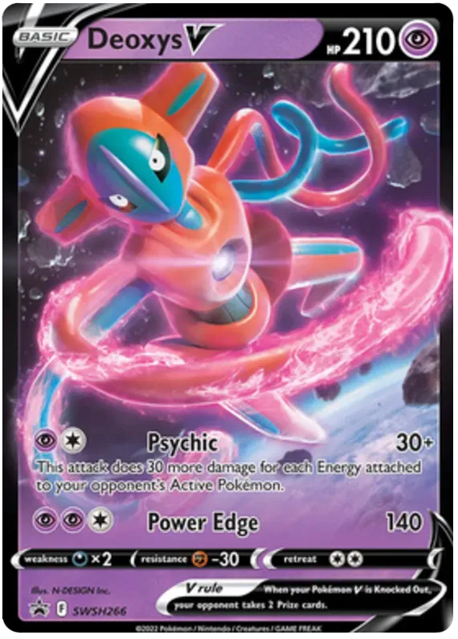

2- Deoxys
Deoxys é um ser enigmático vindo do espaço profundo, nascido da mutação de um vírus alienígena exposto a um raio cósmico; ele desliza pelos céus com uma presença hipnótica, moldando seu corpo à vontade — seja para atacar com fúria, resistir como um bastião ou mover-se com velocidade sobrenatural. Com olhos que brilham como estrelas distantes e tentáculos pulsantes de energia psíquica, ele não apenas luta — ele estuda, adapta-se e responde com uma inteligência fria e cósmica, como se fosse um emissário de um universo que ainda mal compreendemos.